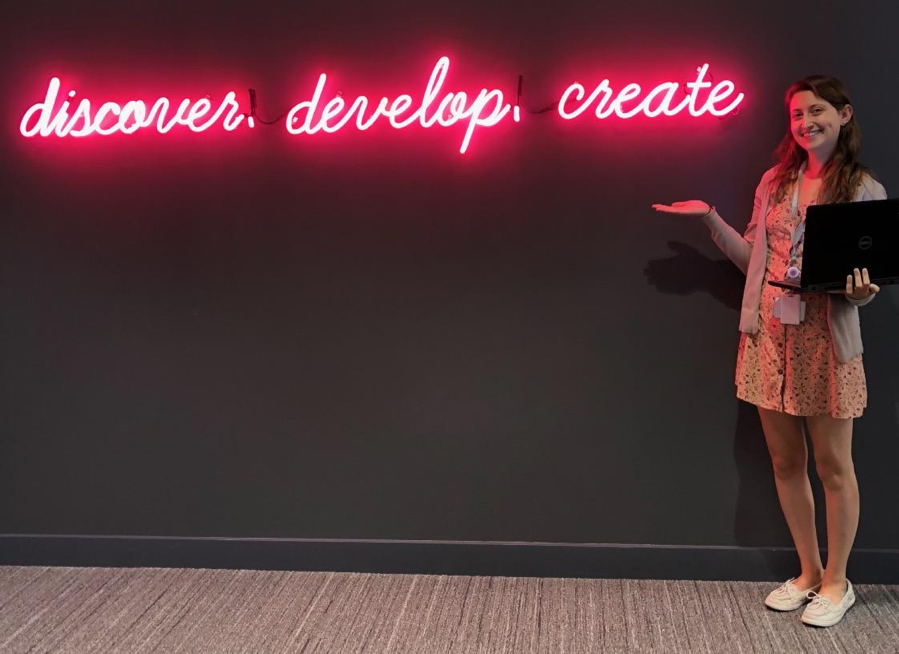

An interview with my MS Biostatistics classmate Kim Hirschhorn about her experience as a biostatistician at a Contract Research Organization (CRO) for pharmaceutical companies.

Earlier this year I wrote my first blog post, “A Day in the Life of a Biostatistician,” documenting the granular details of my work as an early career academic research biostatistician. I’m excited to announce I am turning that post into a “day in the life” series in which I interview other biostatisticians with differing roles. My hope is that it will enlighten anyone interested in the field of biostatistics, and especially help undergraduate and current biostatistics Masters students make informed decisions about their careers.
My first interviewee is Kim Hirschhorn, a former classmate and good friend from my time at the University of Michigan School of Public Health. Kim is an avid reality TV show watcher, loves Eggo waffles and Hostess Ho-Hos, and is a great statistician; so great, professors were often confused as to why she wasn’t planning to pursue a PhD. Kim, however, has always been adamant that she doesn’t need a PhD to have the career she wants.
Kim’s determination to find a job which allowed for ample career growth with “only” an MS in Biostatistics paid off. After graduating in 2018, she chose to work as a biostatistician at PRA Health Sciences, a Contract Research Organization (CRO) for pharmaceutical companies. Biostatistician roles at CROs offer excellent career trajectory for Masters-level statisticians and don’t have a job title ceiling as some careers in statistics notoriously do for those without a PhD. Additionally, it’s a lucrative job option for a Masters-level biostatistician. (🤑!) For more information on salaries of early career statisticians you can check out the American Statistical Association’s recent survey of 2018 Masters in Statistics graduates. But, to learn more about what Kim actually does as a biostatistician at a pharmaceutical CRO, read on!
Kat: Thanks for taking the time to chat, Kim! Can you tell me where you work and what the mission of your company is?
Kim: I work at the Chicago office of a large CRO called PRA Health Sciences. PRA stands for Pharmaceutical Research Associates, and our primary responsibility is to run clinical trials for pharmaceutical companies. This includes everything from planning the study at an administrative level – such as identifying physicians to recruit patients and administer drug therapies – to collecting data like patients’ disease progression and adverse events, analyzing and summarizing the results, and submitting requests for the successful trials to be approved by the Food and Drug Administration (FDA). After a pharmaceutical company has researched and developed a potential new drug, we partner with them to implement the various phases of clinical trials necessary to test that drug.
Whoa, sometimes I forget about all the steps in a clinical trial. Before we go any further, can you give us a quick explanation about what those phases of clinical trials mean?
There are three main phases: Phase I, II, and III. In general, Phase I clinical trials check whether a drug is safe to administer. Sometimes this also involves testing which dosage of a drug is safe – or at least not overwhelmingly toxic – to the body. Phase I trials are usually done on a small group of patients. Phase II trials are done on a larger group of patients and focus on whether the drug is effective, or in other words, whether it can actually fix whatever health problem the pharmaceutical company had in mind when developing it. Most drugs fail in Phase II.
If a drug does move onto a Phase III trial, its performance in comparison to the current standard of care (which is often another drug on the market) is evaluated. In both Phase II and III, patients are randomized into treatment and control groups and typically neither physicians nor patients know which treatment is administered. Even patients who are not receiving a treatment will receive a sugar pill, or placebo drug. Oftentimes a clinical trial’s aims will fall somewhere between two phases. For example, I’ve worked on Phase 1b/2a trials that collect information on safety, determine the recommended dose, and then evaluate the drug’s efficacy.
I see, so which of those phases do you work on?
I have been a Biostatistician I for a bit over a year now, so that means I am the lead biostatistician on a few simple Phase I trials. There is usually not much statistical testing occurring here; it’s all about how many patients have an adverse response to the drug. Since I am still in the most junior biostatistician role, a lot of my time is spent doing biostatistical support for Phase II and III trials, where more senior biostatisticians oversee my work and pre-specify the analyses. The longer I stay at my job, the more responsibilities I will have and the more complex studies I will lead.
What’s involved in leading a study, even a “small and simple” phase I? How is that different from the work you do as “biostatistical support” on the Phase II and III trials?
When I am the lead of a study, I am meeting with members of the pharmaceutical company and working with them to develop a statistical analysis plan. Once the clinical trial starts and I begin to receive data, I work with programmers to ensure everything that needs to be done for the analysis is completed in the time allotted by that trial’s budget. Since the studies I am leading now are early phase, I am in charge of doing all the statistical analyses and reporting the results back to the pharmaceutical company.
In contrast, when I am biostatistical support, I am mostly executing analyses already specified in a statistical analysis plan. This typically involves writing macros in the statistical programming language SAS to ultimately produce what is dozens of outputs. A large portion of my time as a junior biostatistician is spent figuring out the best way to present that huge amount of data and results in a comprehensible way. Even before I have data from a clinical trial, I have to plan out detailed tables and prepare a shell document for when the data is ready for analysis.
Who are you working with in your day-to-day roles?
I get assignments from my manager, and then work with the lead biostatisticians on each trial. It is standard in the pharmaceutical industry that all analyses must be independently reproduced. This usually means the lead biostatistician is redoing my analysis without looking at my code, so sometimes I have to work closely with him or her to figure out why our results are not matching. Besides that, I frequently collaborate with the data programmers and statistical programmers in charge of the data for the trials I am working on.
Data programmers are in charge of taking raw data from the trials, checking it for inconsistencies, and putting it into a standardized form for statistical programmers. Statistical programmers then take those standardized data sets, derive many new variables from those initially collected for each patient, and produce hundreds of tables and figures summarizing the data. In some cases they also help prepare the data for my analyses, for example, they might write code to calculate the number of days or months until each patient experienced disease progression so that I can use that information for statistical models.
If there is a problem with the data when I am running a model, I ask the statistical programmer to check his or her code, and if there is no issue there, the data programmer looks at their code. If necessary, the data programmer may go back to the clinical sites who are collecting the data from patients and ask them to correct any missing information or inconsistencies.
Sounds like your data is in pretty good shape when it arrives to you, then! Earlier you mentioned writing macros in SAS. Does everyone use SAS? Could you use R or another programming language if you wanted?
I have used R for a few side analyses, such as a data mining analysis. However, the industry standard for pharmaceuticals has always been SAS. I don’t foresee that changing anytime soon. Although a huge benefit of R is that it is free and open source software, meaning anyone can contribute code in a package, SAS has the advantage that if you run a certain type of statistical model, you can be absolutely sure that is what ran on your data. Because SAS is a paid software, it is liable for what it says it is doing, and there is always support on hand if you have questions about errors or results you are getting from any given data procedure.
What are your hours like? What sort of flexibility do you have for vacation, or working remotely?
I usually get in at 8:15 and leave somewhere between 4:45 and 5:15. I do get a lot of vacation days, with the caveat that if there is a deliverable deadline for a project I’m working on, I may not be able to take my vacation during that time. As for working remotely, it’s an option I have as-needed, such as if I have a doctor’s appointment. The job can definitely be done 100% remotely, and in fact many members of the company work remotely, but it’s not really an option for a Biostatistician I to do all the time because we rely so heavily on our senior biostatisticians. I prefer that, though - it’s easier for me to work in the office!
How will your roles and responsibilities change as you progress as a biostatistician at a CRO?
When I said a lot of my time is spent working on table shells and report planning, I think it’s worth acknowledging that that is not a very exciting activity. However, as a Biostatistician I progresses to Biostatistician II, Senior Biostatistician, Principal Biostatistician, Senior Principal Biostatistician, etc., a lot of those more mundane (in my opinion) tasks decrease. You are in charge of much more complex studies and specifying the statistical analyses for that clinical trial. The work also naturally becomes more managerial.
Being in charge of a trial means meeting with both external clients and internal company leadership, setting timelines for data/statistical programmers and junior biostatisticians, answering questions that come up about data and analyses, maintaining oversight of the hours each team member is spending on the project, and tracking the corresponding budget carefully. As biostatisticians progress in the career ladder at a CRO, they have some flexibility in how much data they actually analyze on a day-to-day basis.
What made you decide to take this position at a CRO over your other offers?
Well of course it’s not all about money, but this was one of the highest offers I received, so that helped. The potential for career growth was also very appealing to me. Typically after about 4-5 years you are a Senior Biostatistician and qualified to lead any study. But, you can lead studies long before this if the pharmaceutical company agrees you are qualified to do so. I really like that career progression at a pharmaceutical CRO is very much about experience and skills, as opposed to whether or not you hold a PhD. This is often not the case if you work directly for a pharmaceutical company.
Finally, what made you choose to enter the field of Biostatistics?
I have always been drawn to a career in public health. During my first year at the University of Illinois, I was a stereotypical freshman pre-med student. I ultimately changed my mind about medical school and got a Bachelor’s degree in statistics, but I still took several epidemiology and biology classes just because I found them interesting. Math has always been my strongest subject, but I wanted to find a way to combine it with my other interests. After doing a fair share of Googling, I found the field of Biostatistics. I met with the head of U of I’s Statistics MS program, and he shared his experience of working in industry as a biostatistician before becoming a professor. He spoke very highly of the field and gave me a lot of great information on the types of careers I could have with a Masters in Statistics or Biostatistics. I was pretty much sold after that meeting.
Looking back, are you happy with your decision to do a Masters in Biostatistics, rather than Statistics or Applied Statistics?
Yes, I’m really happy I decided on a Masters in Biostatistics. Throughout my program, our applied problem sets were always related to medicine or healthcare in some way, and it was easy for me to take health-specific statistics classes, such as a clinical trials methodology course. Since I was pretty sure I wanted to go into healthcare, I think biostatistics was a great decision for me, because a Masters in Biostatistics shows my passion for the field and may give me an edge over similar applicants who have a more general Masters in Statistics or Applied Statistics. I still find public health to be the most interesting sector to practice statistics in, so I think the degree will always be to my advantage.
Thanks so much for chatting, Kim!
If you have other questions for Kim, or if there are careers within biostatistics you’d like to hear about, feel free to email me and let me know.
All the best,
Kat
© Katherine Hoffman 2022. Website created with Quarto – source code on Github.